화약류관리기사 (2003-05-25 기출문제)
1과목: 일반화약학
1. 함수폭약의 특징에 대한 설명으로 옳지 않은 것은?(오류 신고가 접수된 문제입니다. 반드시 정답과 해설을 확인하시기 바랍니다.)
- 열, 화염에 대하여 민감하다.
- 순폭성과 내한성이 좋다.
- 내수, 내습성이 양호하다.
- 갱내 사용이 가능하다.
(정답률: 40%)

2. 기폭약에 대한 설명으로 옳게 기술된 것은?
- 헥소겐은 기폭약의 일종으로 매우 위험한 폭약이다.
- 기폭약은 작은 화염에 의해 바로 폭굉에 이른다.
- 기폭약은 매우 위력이크나 약간 둔감한 편으로 취급에 안전하다.
- 기폭약은 주로 뇌관의 전폭약(첨장약)에 쓰인다.
(정답률: 55%)
3. 단위 중량당 산소를 가장 많이 발생하는 물질은?(오류 신고가 접수된 문제입니다. 반드시 정답과 해설을 확인하시기 바랍니다.)
- 테트릴
- 면약
- KNO3
- NH4C103
(정답률: 알수없음)
4. 다음 중 과염소산염을 주제로하는 폭약은?
- TNT
- 흑색 Carlit(흑색 카알리트)
- Dynamite(다이너마이트)
- 흑색화약
(정답률: 알수없음)
5. 전기뇌관에 관한 설명으로 옳은 것은?
- 각선 끝을 단락시키면 정전기에 안전하다.
- 점화약 점화후 뇌관이 폭발할 때까지의 시간을 점폭 시간이라 한다.
- 납판 시험에서 두께 4㎜ 의 납판을 관통해야 한다.
- 0.25 Amp 에서 30초 이상 통전하면 발화해야 한다.
(정답률: 82%)
6. 2NH4ClO4 이 폭발할 때는 필연적으로 발생하게 되는 HCl 가스의 불쾌감을 상쇄시키기 위한 방법은?
- 소량씩 폭발 시킨다.
- 질산칼륨을 제조시에 배합해 준다.
- 톱밥을 제조시에 배합해 준다.
- 중유를 제조시에 배합해 준다.
(정답률: 60%)
7. 폭속 6700m/sec 인 TNT의 KAST 맹도값은? (단, 장전비중: 1.59, 화약력: 8080kg/L)
- 86,076
- 54,136
- 10,653
- 12,847
(정답률: 42%)
8. 면약제조에서 세단공정의 가장 적절한 목적은?
- NC 분자속에 함유된 산분을 제거하기 위하여
- NC 입자를 균일하게 하기 위하여
- NG 와 교화가 쉽도록 단면적을 크게 하기 위하여
- 불순물을 잘게하여 화약의 마찰을 방지하기 위하여
(정답률: 알수없음)
9. nitrocellulose 는 cellulose 를 황산과 질산으로 된 혼산에 담그고 에스테르화 시키면 얻어진다. 다음 방법 가운데 N.C의 제조법이 아닌 것은?
- Abel 식
- Thomson 식
- Nathan 식
- Selwig - Lange 식
(정답률: 86%)
10. 폭약을 제조하기 위하여 건물을 신축하여 피뢰설비를 하였다. 피뢰도선이 한 줄인 경우 전극의 접지저항을 얼마로 하여야 하는가?
- 1오옴 이하
- 5오옴 이하
- 10오옴 이하
- 20오옴 이하
(정답률: 알수없음)
11. 니트로화합물에 대한 설명으로 옳지 않은 것은?
- 화약류로서 중요한 것은 방향족 니트로화합물이다.
- 니트로기가 3개 결합된 화합물이 강한 폭발성을 가진다.
- 펜트리트는 방향족 니트로화합물이다.
- T.N.T.는 물에는 녹지 않으며, 아세톤, 벤젠, 알콜에 녹는다.
(정답률: 55%)
12. 8 호 뇌관에 둔성폭약시험을 하고자 할 때 둔성폭약의 원료화약 배합비율로 옳은 것은?
- TNT 60%, 활석 40%
- TNT 70%, 활석 30%
- TNT 80%, 활석 20%
- TNT 90%, 활석 10%
(정답률: 알수없음)
13. 디니트로나프탈렌(D.N.N)의 분자식은?
- C10H6(NO2)2
- C5H5(NO2)2
- C6H2(NO2)3. OCH3
- CH3. C6H(NO2)3
(정답률: 64%)
14. 흑색화약제조에 관한 설명으로 옳지 않은 것은?
- 질산칼륨, 황, 목탄의 3가지 원료를 사용한다.
- 구상화약은 채암용(석재채취용)으로 사용된다.
- 조성은 입상화약으로 KNO3:S:C = 75:10:15 이다.
- 입상화약을 광택하는 주목적은 점화를 용이하게 하기 위함이다.
(정답률: 74%)
15. 도트리쉬 폭속시험법으로 폭약의 폭속을 측정하였다. 기준점에서 폭발합점까지(x)의 거리가 5.4cm 였을 때 이 폭약의 폭속은? (단, ℓ=10cm, 도폭선의 폭속=5600m/sec)
- 5,130m/s
- 5,155m/s
- 5,160m/s
- 5,185m/s
(정답률: 72%)
16. Gelatine dynamite 의 폭속은?
- 3,000 - 4,000 m/s
- 4,000 - 5,000 m/s
- 5,000 - 7,500 m/s
- 6,000 - 9,500 m/s
(정답률: 60%)
17. 40% dynamite(질산암모늄), 약경이 32mm, 약량이 125 g의 사상 순폭시험 결과 순폭도가 8 이었다. 또 다시 순폭시험을 하였더니 순폭도 거리가 195mm 이었다. 이 결과 순폭도는 얼마나 감소되었는가?
- 2
- 4
- 6
- 8
(정답률: 알수없음)
18. 화약류 감도시험의 종류와 관계가 먼 것은?
- 낙추시험
- 마찰시험
- 발화점시험
- 가열시험
(정답률: 82%)
19. 화약류 분해 및 폐기방법으로 옳지 않은 것은?
- NG를 가성소다-에틸알코올 용액으로 분해한다.
- RDX를 가성소다 수용액으로 분해한다.
- 아지화납을 가성소다 수용액으로 분해한다.
- DDNP를 알코올에 녹여 소각한다.
(정답률: 64%)
20. 폭발가공법에 대한 설명으로 옳지 않은 것은?
- 폭발성형은 폭발압력을 이용하여 금속판을 성형가공 하는 방법이다.
- 폭발접합은 폭발력을 이용하여 2 개의 금속판을 접합시키는 것이다.
- 폭발체결(확관)은 2 종류 관의 폭발력을 이용하여 체결하는 것이다.
- 폭발경화는 폭발에너지를 이용하여 금속분말 등을 압착 결합시키는 방법이다.
(정답률: 50%)
2과목: 발파공학
21. 공경(d)이 25mm인 발파공 2개를 7.5cm의 간격으로 조합발파 하였을 때 저항선의 비(q)는 얼마인가?(단, 장약장(m) = 12d)
- 1.53
- 2.53
- 3.53
- 4.53
(정답률: 8%)
22. 벤치 발파에 관한 다음 설명으로 틀린 것은?
- Wide space blasting이란 천공간격을 일반적인 벤치 발파의 경우보다 좁히고 저항선을 크게한다.
- 경사 천공시 벤치 저면부분에서의 압축저항은 수직천 공시의 압축저항보다 적다.
- Langefors가 제시한 최대저항선 산출공식에 의하면 천공각도가 수직일 경우 구속계수(fixation factor) f값은 1.0을 적용한다.
- 서브드릴링(subdrilling)은 저항선의 30%만큼 더 천공한다.
(정답률: 37%)
23. 천공발파에 있어서 최소저항선을 W, 누두반지름을 r라고 할 때 W와 r의 관계로서 과장약을 설명하는 것 중 맞는 것은?
- W가 r보다 적을 때
- W가 r보다 클 때
- W와 r가 같을 때
- W가 r보다 2배이상 클 때
(정답률: 8%)
24. 다음 중 발파에 의한 저주파음의 생성기구 중 거리가 먼것은?
- 자유면 이동이나 발파공 주변의 융기
- 암반 압력 Pulse
- 파쇄된 암반의 틈을 통하여 나오는 가스의 분출
- 완전 전색으로 인한 표준발파
(정답률: 0%)
25. 다음 그림과 같은 암석을 소할발파할 때의 장약량은 얼마인가?(단, 천공법으로 C=0.02이다.)
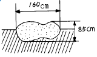
- 144.5g
- 270g
- 425.5g
- 512g
(정답률: 0%)
26. 석회석광산의 노천채광장에서 계단식발파를 시행하고 있다. 근래에 주로 어떠한 종류의 폭약을 많이 사용하는가?
- 미진동파쇄기, 흑색화약
- ANFO폭약, 함수폭약
- 도폭선 폭약, 초안폭약
- 다이나마이트, TNT
(정답률: 10%)
27. 제발발파에서 발파공간의 거리계수 e값이 가장 큰 것은?
- 연암
- 중경암
- 경암
- 극경암
(정답률: 알수없음)
28. 다음 중 홉킨슨효과(Hopkinson effect)의 설명으로 틀린것은 어느 것인가?
- 폭약이 폭발하면 폭굉에 따라 응력파가 발생한다.
- 응력파가 전파하여 자유면에 도달되면 이것이 다시 반사되어 암반속으로 되돌아 간다.
- 암석은 압축강도보다 인장강도에 훨씬 약하다. (압축강도의 1/10-1/20 정도)
- 입사할 때의 압력파보다 반사할 때의 전단파에 보다 더 많이 파괴된다.
(정답률: 0%)
29. 전색에 관한 설명으로 틀린 것은?
- 완전 전색 되었을 때의 계수는 0이다.
- 전색물의 종류에는 물, 점토 등이 쓰인다.
- 장약 부근에는 서서히 다짐하고, 공구부분에서는 단단하게 다짐한다.
- 폭발초기에 발생하는 충격파의 전달로 전색물이 공밖으로 튀어 나오지 않을 정도로 다진다.
(정답률: 0%)
30. 아래와 같은 조건에 의하여 bench cut발파를 할 때 3공의 약량의 합계는 얼마인가 ? (단, C:발파계수=0.2)
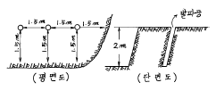
- 0.9kg
- 2.1kg
- 1.5kg
- 2.7kg
(정답률: 14%)
31. 발파비용의 계산에 있어서는 단순히 발파 뿐만 아니라 그외 모든 작업에서 생기는 원인들을 고려해야 하는데 다음중 옳은 것은?
- 공경이 클수록 단위체적당 천공비용이 줄어든다.
- 단위체적당 장약에 드는 비용은 공경이 클수록 늘어난다.
- 적재운반비용은 사용기기와 적재용량에 좌우되며 적재용량이 크면 비용도 증가한다.
- 분쇄비용도 분쇄설비가 크고 영구적이고 사용되는 방법이 대규모적이고 광범위할수록 비용도 증가한다.
(정답률: 0%)
32. 다음 설명 중 맞는 것은 어느 것인가?
- 암석발파에 있어서 천공의 길이를 최소저항선이라 한다.
- 장전비중이 작을수록 폭파효과는 크다.
- 자유면의 수가 많을수록 폭파효과는 적어진다.
- 순발전기뇌관과 지발전기뇌관의 구조상의 차이점은 연시장치의 유무 뿐이다.
(정답률: 7%)
33. 다음 설명 중 틀린 것은?
- 추력 : 착암기를 사람의 힘이나 Leg feed로 밀어주는 힘을 말한다.
- Stall : 착암기의 압축공기압 또는 유압이 너무 낮을 경우 생기는 현상
- Strip ratio : 노천에서의 연암과 경암의 체적비를 말한다.
- Look-out : 계획된 터널의 규격을 유지하기 위한 방법으로 굴착예정선보다 외각으로 10cm+3cm/m 정도를 유지한다.
(정답률: 10%)
34. 다음 중 비석의 원인이 아닌 것은?
- 과다한 장약량
- 국부적인 장약공의 집중현상
- 장약공의 충분한 전색
- 단층, 균열, 연약면 등에 의한 암반의 강도 저하
(정답률: 10%)
35. NG 60%의 스트렝스 다이너마이트를 기준으로 할 때 암석 계수(㎏/m3)의 평균 값이 제일 큰 것은?
- 안산암
- 응회암
- 편마암
- 석회암
(정답률: 12%)
36. 계단식 발파설계시 저항선(burden)에 관한 설명 중 틀린것은?
- 다중열 발파시 세번째 이후의 저항선은 첫번째 또는 두번째 열보다 적게 된다.
- 성층 또는 층리(bedding)가 절개면쪽(벤치하부쪽)으로 가파르게 경사진 지층일 경우 저항선은 성층이 없는 지층에서 보다 크게 나타난다.
- 암괴(massive) 상태의 암반을 발파할 경우 절리가 발달한 경우에 비해 저항선을 크게 한다.
- 약경이 일정한 경우 저항선은 암석의 비중이 클수록, 폭약의 비중이 적을수록 작아진다.
(정답률: 알수없음)
37. 어떤 발파현장에서 시험발파를 실시한 결과 표준장약량이 0.9kg이었다. 암석 및 폭약의 종류, 발파방법을 그대로 유지하고 최소저항선만 4m까지 증가시킬 경우 표준장약량은 ? (단, Lares 수정식을 이용, 시험발파는 최소저항선 1m를 적용함)
- 18.55kg
- 20.45kg
- 35.55kg
- 40.25kg
(정답률: 16%)
38. 발파진동을 경감시키려면 다음과 같은 방법을 취해야 한다. 틀린 것은?
- 동적 파괴효과의 비율이 작고, 폭속이 낮은 폭약을 사용한다.
- 천공경에 대하여 약경을 작게 하여 충격파를 완화한다.
- 발파공을 모두 순발뇌관을 사용하여 제발발파한다.
- 폭원과 진동수진점 사이에 파동전파를 차단하는 조치를 취한다.
(정답률: 17%)
39. 어떤 암석층에 대한 폭파시험에서 장약량 700g으로 누두지수(n)는 1.2가 되었다고 한다. 이 암석층에서 같은 최소저항선으로 누두지수(n)가 1이 되도록 하기 위한 표준 장약량은?
- 약 259g
- 약 395g
- 약 4⑤g
- 약 458g
(정답률: 20%)
40. 미진동 파쇄기에 대한 설명이다. 맞지 않는 것은?
- 미진동 파쇄기는 화약류 단속법에서 화공품에 속하며, Polyethylene약통과 소형전기뇌관과 같은 점화구가 한쌍으로 되어 취급한다.
- 60~100m/sec 정도의 속도로 연소되고 고열을 발생하여 대상물을 파쇄한다.
- 미진동 파쇄기는 밀폐상태에서 1500∼2500kgf/cm2정도의 강한 충격파를 발생시킨다.
- 주변 환경상 비석, 폭발음, 진동 등의 공해로 폭약의 사용이 어려운 곳에서 암반이나 콘크리트 파쇄에 사용되고 있다.
(정답률: 9%)
3과목: 암석역학
41. 다음 그림은 어떤 사면 파괴 형태를 나타낸 것인가?
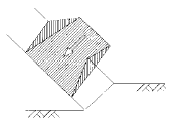
- 원호파괴
- 평면파괴
- 쐐기파괴
- 전도파괴
(정답률: 22%)
42. In-situ rock의 탄성파속도를 Vf, 그 암반에서 채취한 무결암(Intact rock)의 탄성파 속도를 VL이라고 할 때, 올바른 균열계수의 식은?
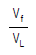
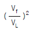
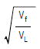
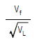
(정답률: 0%)
43. 암석의 내부마찰계수가 1인 경우 Coulomb 파괴이론에 따르면 단축압축강도는 단축인장강도의 몇 배가 되는가?
- 3.8
- 5.8
- 7.8
- 10
(정답률: 0%)
44. 지름이 2.5cm, 두께가 1.5cm인 시험편의 압열인장시험 결과 파괴하중이 120kg 였다. 이 암석의 인장강도는?
- 192.4 kg/cm2
- 20.4 kg/cm2
- 31.5 kg/cm2
- 12.5 kg/cm2
(정답률: 10%)
45. 모어(Mohr) 응력원 포락선이 직선일 때 암석의 단축압축강도 800㎏/㎝2, 전단강도가 100㎏/㎝2이면 이 암석의 단축인장강도는 얼마인가?
- 30㎏/㎝2
- 50㎏/㎝2
- 80㎏/㎝2
- 120㎏/㎝2
(정답률: 알수없음)
46. 록볼트(Rock bolt)의 효과라고 볼 수 없는 것은?
- 매달림효과(suspension effect)
- 마찰효과(friction effect)
- 지하수유입억제효과(water-proof effect)
- 자물쇠효과(keying effect) 또는 봉압효과(confining effect)
(정답률: 0%)
47. 암석의 동적 탄성율 ED, 동적 강성율 GD를 알면 동적 poisson's ratio 를 구할 수 있다. 다음 중 맞는 식은 어느 것인가?
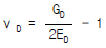
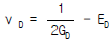
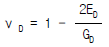
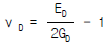
(정답률: 9%)
48. 암석의 변형 특성을 나타내는 모형중 시간 의존성을 고려한 모형으로 가장 올바른 것은?
- 훅(Hooke) 모형
- 완전항복 모형
- St.Venant 모형
- Voigt 모형
(정답률: 0%)
49. 다음은 원형 갱도면에 작용하는 일반적인 응력의 내용이다. 맞는 것은 어느 것인가? (단, 연직응력 ＞ 수평응력)
- 전부 압축응력이 작용한다.
- 전부 인장응력이 작용한다.
- 상하부에는 전단응력이 좌우부에는 압축응력이 작용한다.
- 상하부에는 인장응력이 좌우부에는 압축응력이 작용한다.
(정답률: 알수없음)
50. 무한 매질 속의 구형 공동의 응력분포해석에서 정수압 상태(-P)일 때 공동벽면에 집중되는 접선 응력의 크기에 대해 바르게 나타낸 것은?
- 2차원 원형터널의 경우 -P
- 2차원 원형터널의 경우 -2P
- 3차원 구형공동의 경우 -2P
- 3차원 구형공동의 경우 -3P
(정답률: 10%)
51. 다음 중 응력불변량(stress invariants)이 아닌 것은?
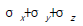
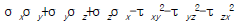
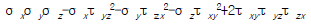
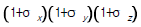
(정답률: 0%)
52. 암석의 점성도(Viscosity)란 무엇을 말하는가?
- 전단응력과 전단변형률(shear strain)과의 비이다.
- 전단응력과 전단변형률속도(shear strain rate)와의 비이다.
- 전단응력과 수직변형률(normal strain)과의 비이다.
- 전단응력과 수직변형률속도(normal strain rate)와의 비이다.
(정답률: 알수없음)
53. 암반을 공학적으로 분류하기 위해 제시된 방법이 아닌 것은?
- RMR
- Q-system
- NATM
- RQD
(정답률: 19%)
54. 다음 중 골재의 마모 정도를 측정하는 시험에 사용하는 것으로 적당한 것은?
- Mohs 경도계
- Shore 경도계
- Los Angeles 시험기
- Rockwell 경도계
(정답률: 0%)
55. 변형률 계측을 위하여 1 개의 변형률 게이지와 3 개의 dummy gage로 이루어진 Wheatstone bridge 회로가 있다. 기전력이 3 V, gage factor가 2.0 이라고 할 때 1 %의 변형을 일으킨 경우 출력 전압은 얼마인가?
- 0.06 V
- 0.03 V
- 0.015 V
- 0.0⑤ V
(정답률: 0%)
56. 초기응력을 측정하기 위하여 수압파쇄시험을 수행하여 초기파쇄압력(Pb)은 150kg/cm2, 균열확장압력(Pp)은 100kg/cm2, 균열폐쇄압력(Ps)은 70kg/cm2, 균열개구압력(Pr)은 120kg/cm2을 얻었다. 이 때 최대수평주응력은?
- 70kg/cm2
- 90kg/cm2
- 110kg/cm2
- 150kg/cm2
(정답률: 20%)
57. 암석의 압축시험에서 변형률의 증가에 따라 강도가 저하되는 현상을 무엇이라 하는가?
- 변형률 경화
- 변형률 연화
- 취성거동
- 연성거동
(정답률: 0%)
58. 다음 중에서 조직 민감성이 가장 큰 것은?
- 비중
- 비열
- 탄성계수
- 강도
(정답률: 0%)
59. 단면적이 10cm2인 원주형 암석시편에 1ton의 압축 하중이 걸려 있다. 하중 방향에서 15° 경사된 면상에 일어나고 있는 전단응력은 얼마인가?
- 13 kg/cm2
- 20 kg/cm2
- 25 kg/cm2
- 30 kg/cm2
(정답률: 0%)
60. 어느 암석의 포아송비(poisson's ratio)가 0.25, 탄성계수(young's modulus)가 4.5 × 105 kg/cm2 라면 이 암석의 체적 탄성계수는 얼마인가?
- 2.0 × 105 kg/cm2
- 3.0 × 105 kg/cm2
- 9.0 × 105 kg/cm2
- 20.5 × 105 kg/cm2
(정답률: 10%)
4과목: 화약류 안전관리 관계 법규
61. 화약류를 운반하고자 하는 사람은 누구에게 신고를 해야 하는가? (단, 대통령령에 정한 수량이하의 화약류를 운반하는 경우 제외)
- 화약류 사용장소 관할 경찰서장
- 발송지 관할 경찰서장
- 주소지 관할 경찰서장
- 도착지 관할 지방경찰청장
(정답률: 8%)
62. 화약류 저장소에 설치하는 피뢰도선을 직선으로 설치하는 데 부득이 곡선으로 할 경우의 곡률반경은?
- 5㎝ 이상으로 한다.
- 10㎝ 이상으로 한다.
- 15㎝ 이상으로 한다.
- 20㎝ 이상으로 한다.
(정답률: 10%)
63. 초유폭약(ANFO)에 의한 발파의 기술상의 기준 중 틀린 것은?
- 기폭량에 적합한 전폭약을 같이 사용할 것
- 뇌관이 달린 폭약은 장전용 호오스로 장전하지 아니할 것
- 가연성 가스가 0.5%이상이 되는 장소에서는 발파하지 아니할 것
- 불발된 초유폭약을 제거하는 때에는 압축공기를 사용할 것
(정답률: 39%)
64. 운반신고를 하지 아니하고도 운반할 수 있는 것은?
- 총용뇌관 100만개
- 장난감용 꽃불류 500kg
- 미진동파쇄기 15000개
- 폭발천공기 1000개
(정답률: 42%)
65. 꽃불류의 발사용 화약에 점화하여도 그 화약이 폭발 또는 연소되지 아니하는 때에는 그 발사통에 많은 양의 물을 넣고 얼마이상 경과한 후에 꽃불류를 꺼내야 하는가? (단, 최소시간 임)
- 5분
- 10분
- 15분
- 30분
(정답률: 30%)
66. 화약류의 안정도시험에 사용하는 시험기등에 속한 것중 관계가 없는 것은?
- 옥도가리전분지
- 정제활석분
- 표준색지
- 적색리트머스시험지
(정답률: 알수없음)
67. 화약류의 사용허가신청에 관한 구비서류에 속하는 것은?(단, 꽃불류외의 화약류에 한함)
- 화약류저장 위치
- 사용순서대장
- 사용계획서
- 사용장소 및 그 부근약도
(정답률: 10%)
68. 화약류의 취급방법 중 적당하지 않은 것은?
- 화약, 폭약과 화공품은 각각 다른 용기에 넣어 취급한다.
- 얼어 굳어진 다이너마이트는 30° C이하의 온도가 유지되는 실내에서 누그러뜨린다.
- 얼어 굳어진 다이너마이트는 40° C이하의 온탕을 바깥통으로 하는 융해기를 사용하여 누그러뜨린다.
- 전기뇌관의 도통, 저항시험시 전류는 0.01A를 초과해서는 아니된다.
(정답률: 28%)
69. 화약류관리보안책임자 면허의 취소사유가 아닌 것은?
- 속임수를 쓰거나 옳지 못한 방법으로 면허를 받은 사실이 들어난 때
- 국가기술자격법에 의하여 자격이 취소된 때
- 면허를 다른 사람에게 빌려준 때
- 화약류를 취급함에 있어 고의 또는 과실로 폭발사고를 일으켜 사람을 죽거나 다치게 한 때
(정답률: 19%)
70. 폭약 1톤으로 환산된 수량으로서 잘못된 항목은?
- 공포탄 200만개
- 신호뇌관 25만개
- 미진동 파쇄기 10만개
- 도폭선 50km
(정답률: 10%)
71. 국가기술자격법에 의하여 화약류관리산업기사의 자격을 취득한사람이 화약류관리보안책임자의 면허를 받고자할 때에는 다음 어느 관청장의 면허를 받아야 하는가?
- 행정자치부장관
- 지방경찰청장
- 한국산업인력공단이사장
- 관할경찰서장
(정답률: 17%)
72. 화약류 판매업자의 장부는 그 기입을 완료한 날로부터 몇 년간 보존해야 하는가?
- 1년
- 2년
- 3년
- 5년
(정답률: 30%)
73. 수분 또는 알코올분이 15퍼센트정도 머금은 상태로 운반하여야 하는 것은?
- 테트라센
- 테트라나이트렛트
- 디아조디니트로페놀
- 트리니트로레졸신납
(정답률: 16%)
74. 화약류관리보안책임자 면허를 받은 사람이 국가기술자격 법에 의하여 자격이 정지 되었다면?
- 정지기간 동안 면허를 취소하고 그 기간이 종료되면 재교부 받아야 한다.
- 정지기간 동안만 면허의 효력을 정지해야 한다.
- 차기 재교육을 받고 정지기간 만료후 재교부 받아야 한다.
- 자격이 정지됨에 따라 면허를 받을 수 없으므로 재교육을 받고 재차 검증을 받아야 한다.
(정답률: 알수없음)
75. 화약류를 양도, 양수하고자 하는 사람은 누구의 허가를 받아야 하는가?
- 사용지 관할 경찰청장
- 양수지 관할 경찰서장
- 주소지 관할 경찰서장
- 도착지 관할 경찰서장
(정답률: 9%)
76. 화약류취급소의 정체량에 적합한 것은?
- 화약 600kg
- 초유폭약 400kg
- 공업용뇌관 3,500개
- 도폭선 10km
(정답률: 17%)
77. 1급저장소와 보안물건간의 보안거리중 맞는 것은?(단, 저장된 폭약량은 19톤이며, 석유저장 시설이 있음)
- 110m 이상
- 160m 이상
- 210m 이상
- 130m 이상
(정답률: 10%)
78. 안정도시험의 결과보고에 포함되지 않아도 되는 사항은?
- 시험실시 연월일
- 시험성적
- 시험방법
- 시험장소
(정답률: 34%)
79. 화약류의 소지사용자가 발파 또는 연소에 관한 기술기준을 1회 위반하였을 때의 행정처분은?
- 경고
- 효력정지 15일
- 효력정지 1월
- 효력정지 3월
(정답률: 0%)
80. 화약류 판매업자가 화약류를 도난 당하였으나 신고를 하지 않았을 때(도난신고 불이행) 행정처분 기준은?
- 효력정지 6월
- 효력정지 3월
- 효력정지 1월
- 효력정지 15일
(정답률: 10%)
5과목: 굴착공학
81. 제 5과목: 굴착공학터널 복공의 균열 방지 대책으로 잘못된 것은?
- 숏크리트면에 방수시트 사용
- 팽창성 혼화재 및 수축 저감재 첨가
- 고발열 시멘트 사용
- 터널링 방향에 조절줄눈 설치
(정답률: 0%)
82. 다음 강아치 지보공을 목재 지주식 지보공과 비교 설명한 것 중 틀린 것은?
- 밖에서 제작하여 터널내에서 조립하므로 확실한 지보공이 가능하다.
- 특수 지보공인 동바리공의 확보가 필요하다.
- 공기를 대폭 단축할 수 있다.
- 공사 안전률이 높다.
(정답률: 0%)
83. 점착력이 0인 흙의 마찰각이 커지면 주동토압계수와 수동토압계수는 어떻게 변하는가?
- 주동토압계수는 증가하고, 수동토압계수는 감소한다.
- 주동토압계수는 감소하고, 수동토압계수는 증가한다.
- 주동토압계수와 수동토압계수가 동일하게 증가한다.
- 주동토압계수와 수동토압계수가 동일하게 감소한다.
(정답률: 알수없음)
84. 암반이 매우 연약하여 팽윤 또는 유동하는 상태의 암반을 분류하는데 적절한 방법은?
- RMR
- Q-system
- SMR
- ESR
(정답률: 알수없음)
85. 당초 설계조건과 지반조건이 상이하여 지지력이 부족하거나 또는 압밀이나 침하가 발생하여 기존구조물은 그대로 두고 기초를 보강하거나 증설하는 기초 공법은?
- underpinning 공법
- well point 공법
- compozer 공법
- preloading 공법
(정답률: 0%)
86. NATM의 굴착공법 결정시 기본적으로 고려해야 할 사항이 아닌 것은?
- 막장의 자립성
- 지반의 지지력
- 지표면 침하의 허용치
- 굴착기계의 내구성
(정답률: 10%)
87. 선형 Mohr-Coulomb 파괴기준이 적용되는 어떤 암석의 단축압축강도가 120 MPa, 내부마찰각이 45° 라면, 이 암석에 봉압(confining pressure)이 1MPa 씩 증가할 때 삼축압축강도는 얼마씩 증가하는가?
- 0.172 MPa
- 5.828 MPa
- 2.414 MPa
- 12.433 MPa
(정답률: 10%)
88. 수평과 수직방향의 응력이 각각 2.4 t/m2와 4.8 t/m2이 작용하고 있는 암반내에 직경 3 m의 원형터널을 굴착하였다. 수평방향의 벽면에 작용하는 접선응력은 얼마인가?
- 7.2 t/m2
- 21.6 t/m2
- 12.0 t/m2
- 2.4 t/m2
(정답률: 8%)
89. 다음은 수평 터널의 굴착방법을 나열한 것이다. 이 가운데 분류 기준이 다른 것은?
- T.B.M 공법
- 전단면 공법
- 중벽 분할공법
- 도갱 선진공법
(정답률: 알수없음)
90. 숏크리트에서 rebound 량을 감소시키는 방법과 거리가 먼것은?
- 벽면에 경사되게 분사시킨다.
- 시멘트량을 증가시킨다.
- 타설 벽면을 거칠게 한다.
- 노즐과 시공면과의 거리를 약 1m정도로 유지한다.
(정답률: 10%)
91. 터널굴착시 계측된 실제 구조물의 변위, 변형율, 응력 등에 따라 설계시 채택한 구조모델의 불확실했던 조건들을 추정하는 방법을 무엇이라 하는가?
- 탄성해
- 점탄성해
- 역해석
- 순해석
(정답률: 0%)
92. 사면에서 사면이 파괴되지 않기 위한 조건은 전단응력이 감소하거나 전단강도가 증가되면 된다. 다음 중 전단응력을 감소시키는 요인이 아닌 것은?
- 마찰각(φ)이 사면의 불연속면과 수평면이 이루는 각(θ)보다 크다. (φ＞θ)
- 인장응력에 의한 균열이 발생되고 균열에 물이 차서 수압이 작용하고 있다.
- 사면의 절리면 보강을 위해 Rock-bolt를 절리면에 직각되게 시공하였다.
- 사면상부의 토사일부를 제거시켰다.
(정답률: 0%)
93. 암반의 투수성은 암반 강도에 지대한 영향을 준다. 다음중 암반의 투수성에 영향을 주는 것과 거리가 먼 것은?
- 풍화에 의한 다공성 정도
- 단층 작용에 의한 파쇄 정도
- 절리, 균열 등의 존재 유무
- 지진에 의한 진동
(정답률: 0%)
94. 개착공법을 지질, 환경에 따라 분류할 때 해당되지 않는 것은?
- 소굴식
- 무복공식
- 복공식
- 측구식
(정답률: 0%)
95. 다음 중 역학적인 이방성 암석으로 취급되어야 하는 것은 ?
- 결정편암
- 현무암
- 화강암
- 응회암
(정답률: 16%)
96. 사면 위에 사면과 블록의 폭 부분이 접촉된 상태로 놓여져 있다. 전도파괴(toppling failure)만이 발생할 수 있는 조건을 나타낸 것은 어느 것인가? (단, α : 사면경사각, φ : 사면과 블록과의 마찰각, h : 블록높이, b : 블록폭, tanφ = b/h )
- α ＜ φ , tanφ ＜ b/h
- α ＜ φ , tanφ ＞ b/h
- α ＞ φ , tanφ ＞ b/h
- α ＞ φ , tanφ ＜ b/h
(정답률: 0%)
97. 로드헤더(Road header)에 의한 굴착작업의 장점이 아닌것은?
- 발파공법에 비하여 굴착에 따른 지반의 이완이 적다.
- 작업인원이 적고, 시공이 안전하다.
- 분진 발생량이 작아 환기 및 살수 설비가 필요없다.
- 발파공법과의 병용시공이 가능하다.
(정답률: 알수없음)
98. 다음은 굴착공법을 선정할 때 고려해야 할 사항들이다. 가장 관련이 적은 항목은?
- 용수, 파쇄대의 유무와 그 정도
- 지형, 지질, 피복두께
- 노선의 선정, 지반의 모델화
- 터널의 형상, 선형, 경사, 연장 등 공사규모
(정답률: 0%)
99. 그림과 같이 장방형 ABCD에 등분포하중 q 가 작용할 때, 외부에 위치한 G점의 σ z 를 구하는 방법은? (단,
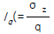
)는 σz에 대한 영향치이다.)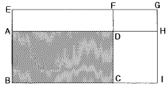
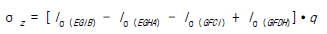
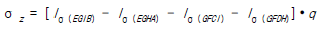
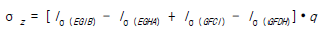
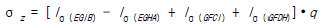
(정답률: 알수없음)
100. 지보공으로 터널을 안정시키지 못하는 팽창성이 큰 암반 지반에서 단면을 폐합하는 시설은 다음 중 어느 것인가?
- 인버어트(invert)
- 숏크리트(shotcrete)
- 록 볼트(rock bolt)
- 복공(lining)
(정답률: 0%)